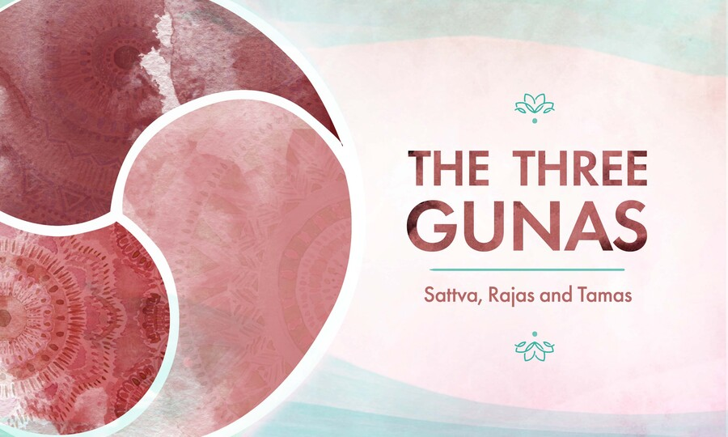
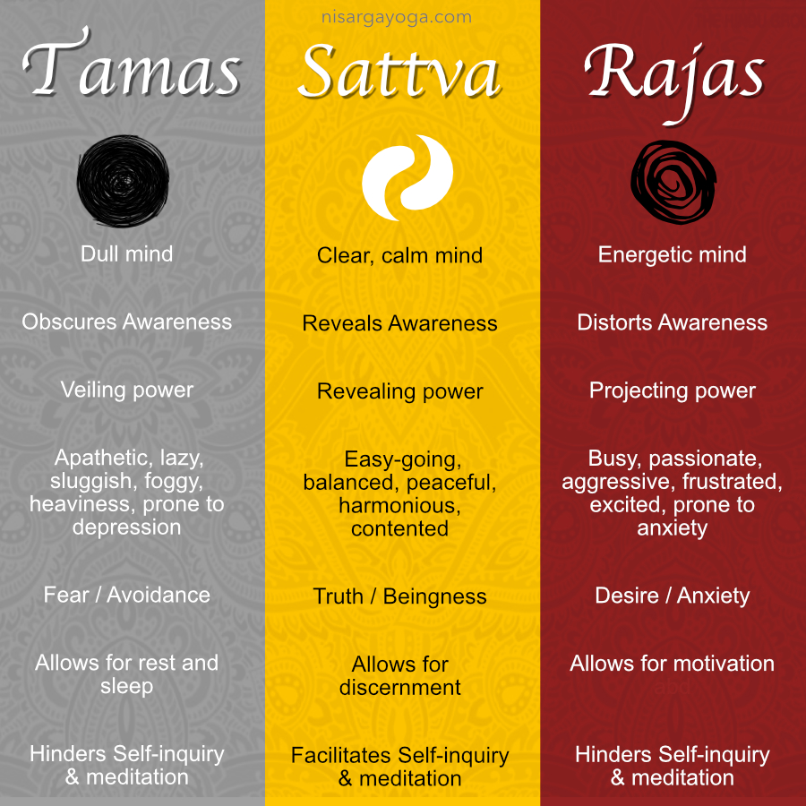

In the philosophy of Yoga, all matter in the universe arises from the fundamental substrate called Prakriti. From this ethereal Prakriti the three primary gunas (qualities of energy) emerge creating the essential aspects of all nature—energy, matter, and consciousness. These three gunas are tamas (darkness & chaos), rajas (activity & passion), and sattva (beingness & harmony). The awareness and conscious manipulation of the three gunas are a powerful way to reduce stress, increase inner peace and lead one towards enlightenment.
In yoga and Ayurveda, a guna is a tattva or element of reality that can affect our psychological, emotional and energetic states. The three gunas were created as an essential component of Sankhya philosophy but the gunas are now a major concept in most schools of Indian philosophy. The three gunas are described as being constantly influx and interacting with one another, in a playful state referred to as maya or illusion. The patterns of the interplay of the gunas can define the essential qualities of someone or something, and these patterns can highly influence the path and progress of life. For yoga practitioners, awareness of the gunas provides a GPS to allow us to make choices to be more balanced, peaceful and harmonious both on and off our mat. Cultivating the ability to identify and understand the nature of the gunas brings us closer to seeing the universal truth of oneness.
All three gunas are always present in all beings and objects surrounding us but vary in their relative amounts. We humans have the unique ability to consciously alter the levels of the gunas in our bodies and minds. The gunas cannot be separated or removed in oneself but can be consciously acted upon to encourage their increase or decrease. A guna can be increased or decreased through the interaction and influence of external objects, lifestyle practices and thoughts.
is a state of darkness, inertia, inactivity, and materiality. Tamas manifests from ignorance and deludes all beings from their spiritual truths. Other tamasic qualities are laziness, disgust, attachment, depression, helplessness, doubt, guilt, shame, boredom, addiction, hurt, sadness, apathy, confusion, grief, dependency, ignorance.
is a state of energy, action, change, and movement. The nature of rajas is of attraction, longing and attachment and rajas strongly bind us to the fruits of our work. Other rajasic qualities are anger, euphoria, anxiety, fear, irritation, worry, restlessness, stress, courage, rumination, determination, chaos.
is a state of harmony, balance, joy, and intelligence. Sattva is the guna that yogis achieve towards as it reduces rajas and tamas and thus makes liberation possible. Other sattvic qualities are delight, happiness, peace, wellness, freedom, love, compassion, equanimity, empathy, friendliness, focus, self-control, satisfaction, trust, fulfillment, calmness, bliss, cheerfulness, gratitude, fearlessness, selflessness.

The mind’s psychological qualities are highly unstable and can quickly fluctuate between the different gunas. The predominant guna of the mind acts as a lens that affects our perceptions and perspective of the world around us. Thus, if the mind is in rajas it will experience world events as chaotic, confusing and demanding and it will then have a strong tendency to continue to react to events in a rajasic way. Therefore, for yogis to make progress along the path we must practice self-observation and discernment to witness and not react to the activities of the gunas. We must also have the inner-strength and willpower to consciously shift our thoughts and actions away from tamas and rajas towards sattvic balance and purpose.
avoid tamasic foods, oversleeping, overeating, inactivity, passivity and fearful situations. Tamasic foods include heavy meats and foods that are spoiled, chemically treated, processed or refined. For more info read A Yogi’s Practical Guide to Balancing Tamas Guna.
avoid rajasic foods, over-exercising, overwork, loud music, excessive thinking and consuming excessive material goods. Rajasic foods include fried foods, spicy foods, and stimulants. For more info read Reducing Rajas Guna: A Yogi’s How-To Guide.
reduce both rajas and tamas, eat sattvic foods and enjoy activities and environments that produce joy and positive thoughts. Sattvic foods include whole grains and legumes and fresh fruits and vegetables that grow above the ground. All of the yogic practices were developed to create sattva in the mind and body. Thus, practicing yoga and leading a yogic lifestyle strongly cultivates sattva.
and thus bind one’s self to the ego. “When one rises above the three gunas that originate in the body; one is freed from birth, old age, disease, and death; and attains enlightenment” (Bhagavad Gita 14.20). While the yogi’s goal is to cultivate sattva, his or her ultimate goal is to transcend their misidentification of the self with the gunas and to be unattached to both the good and the bad, the positive and negative qualities of all life.